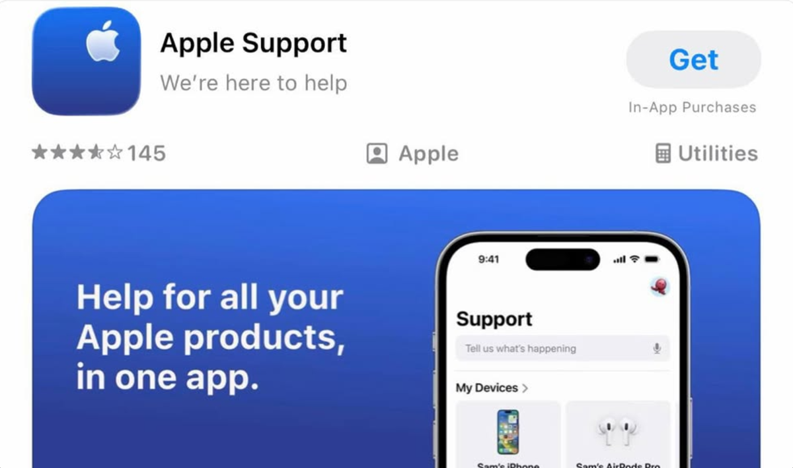
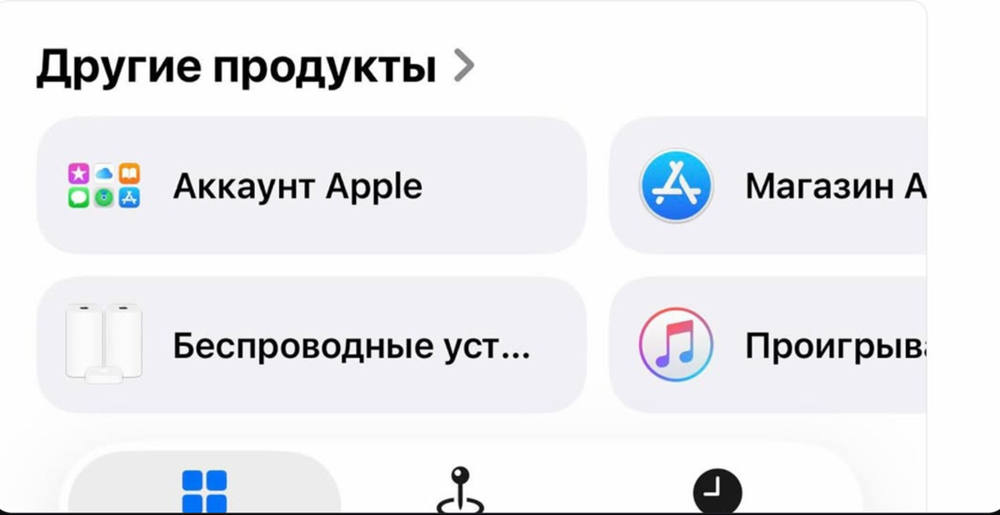
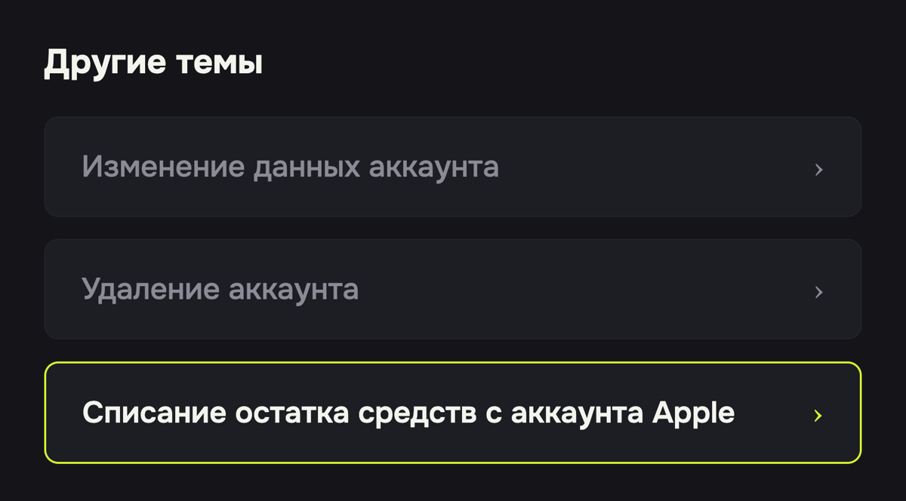

Как списать остаток средств с баланса Apple
Чтобы сменить страну App Store — например, для оплаты подписок или скачивания приложений из другого региона — баланс аккаунта Apple должен быть ровно ноль. Потратить копеечный остаток часто не на что, но его можно списать официально — через поддержку Apple. Ниже — точная последовательность действий.
Именно эти «те самые копейки» на балансе — самая частая причина, по которой iPhone не даёт сменить регион App Store. Обнуление через поддержку — официальная процедура Apple, ничего нарушать не нужно.
- Скачайте приложение «Поддержка Apple» (Apple Support) из App Store. Если в вашем App Store его нет — всё то же самое делается через сайт support.apple.com.

- На вкладке «Поддержка» пролистайте до «Другие продукты» и нажмите «Аккаунт Apple». Дальше выберите «Другие темы, связанные с аккаунтом Apple».

- Выберите тему «Списание остатка средств с аккаунта Apple».

- Напишите в чат или закажите звонок. Опишите запрос: «Хочу списать остаток средств с баланса, чтобы сменить регион». Поддержка попросит подтвердить аккаунт и обнулит счёт.
- Дождитесь обнуления — обычно это занимает от нескольких минут до пары дней. Как только баланс станет 0, регион в App Store меняется свободно.
После обнуления баланса можно переходить к смене региона — пошаговая инструкция: «Как сменить регион App Store» →
Баланс — ноль, регион свободен
Пополнить Apple ID нужного региона и оформить подписки поможет бот PayXO
Открыть @payxo_bot